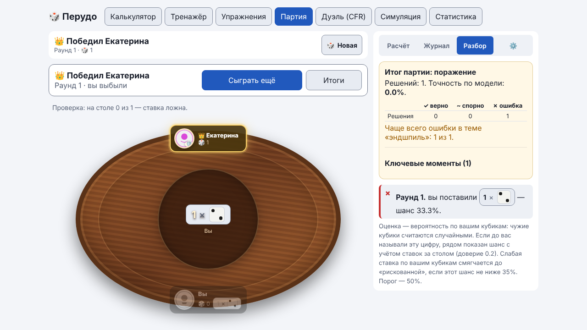
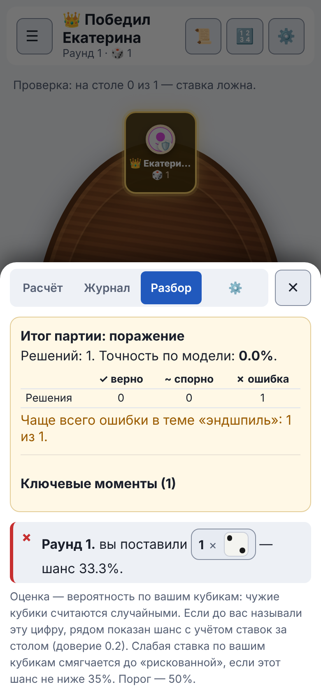

Руководство / Разбор партии
Разбор партии
Приложение оценивает ваши ходы во время партии и после неё показывает самые важные решения, которые стоит повторить.
Разбор ваших ходов
На вкладке «Разбор» каждый ваш ход получает оценку по шансу ставки при ваших кубиках: чужие кубики считаются случайными. Порог — 50%.
| Шанс ставки | Оценка |
|---|---|
| От 50% | «Надёжная ставка» |
| От 35% | «Рискованная ставка» |
| Ниже 35% | «Слабая ставка» |
Второй шанс: с учётом ставок за столом
Если до вас в этом раунде называли ту же цифру, рядом показан второй шанс — с учётом ставок за столом. Игрок, назвавший цифру, с большей вероятностью держит её на руках, и это учитывается (доверие к чужой ставке 0,2). Для первой ставки раунда и для цифр, которых никто не называл, оба числа совпадают, и показано одно.
Ставка, которая слаба по вашим кубикам, но с учётом стола имеет шанс не ниже 35%, получает не красный крестик, а оценку «Рискованная ставка» с пояснением «соперники подтверждают цифру». Пороги 35% и 50% при этом не меняются, а оценка «Не верю» считается только по вашим кубикам.
Комментарий к ходу
Если в настройках партии объяснения включены («После хода» или «До и после хода», в режиме «Новичок» по умолчанию, в «Тренировке» после хода), под оценкой хода появляется короткий комментарий: что вы выбрали, чего не хватало вашей руке и какой шанс у ближайшей альтернативы. Комментарий пишется до вскрытия, поэтому в нём нет слов о том, блефовал соперник или нет: этого вы ещё не знаете. В режиме «Игра» комментариев нет.
Итог партии: ключевые моменты
После партии в карточке итога на вкладке «Разбор» (на телефоне — в шторке) показано, в какой теме больше всего ошибок, и раскрывающийся блок «Ключевые моменты»: до трёх самых важных ваших решений с вариантами хода по шансу ставки. Это сравнение по шансу, а не оценка выигрыша.

Повтор ключевых моментов в Тренажёре
У решения, где был чужой ход, есть кнопка «Добавить в очередь повторов». Ситуация записывается в очередь (без дублей), итог партии остаётся открытым, так что можно добавить и другие моменты. Кнопка меняется на «В очереди повторов ✓». Позже эти ситуации подмешиваются в Тренажёр с пометкой «повтор».
Ваш первый ход в раунде в Тренажёр не переносится: там нет ставки соперника, которую можно проверить.
В окне итогов партии кнопка «Перейти к расчёту» закрывает окно и открывает вкладку «Расчёт» (на телефоне — шторку). Карточка итога с ключевыми моментами оказывается наверху, и ситуации сразу можно добавлять в Тренажёр.
